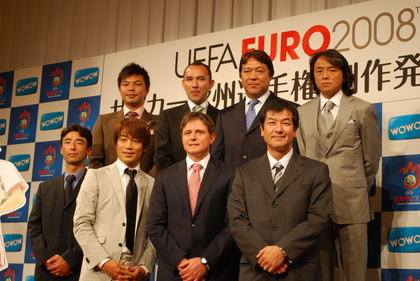

2008年05月30日
WOWOW制作発表会 見
こんにちは。Yahoo! JAPANのT.Kです。 先週、WOWOWのユーロ2008制作発表会に行ってきました。  会場はザ・リッツ・カールトン東京。 司会は、中西哲夫さんと竹内アナ。 壇上には奥寺康彦さん、宮沢ミシェルさん、北澤豪さん、城彰二さんなど、豪華メンバーがずらりと並びました。 さらにスペシャルゲストとして、ストイコヴィッチさん（現名古屋グランパス監督）も登場。 84年と90年大会に出場した経験から、ユーロの魅力を語ってくれました。 大会中はサポーターたちがクルマで自国を応援しに大挙して国境を越えてくる。 そこで文化的交流が生まれ、ヨーロッパの人々が一体になる、そんな大会だそうです。 また、今大会のベスト4予想は、ドイツ、フランス、イタリア、クロアチアとのこと。 ちなみに、WOWOWがこの大会を全試合中継するのは、96、00、04年の大会に続き、今回で4度目になります。 しかも、全試合ハイビジョン放送するのは、今回が初の試みだそうです。 会見の最後には「EURO QUEEN」として佐々木希さんが登場。 PINKYなどのファッションモデルとしても活躍中の彼女、さすがに脚が長い!! 笑顔もとってもキュートでした。 WOWOWホームページでは、佐々木希さんが出場全16ヶ国のユニホームを着て、コーディネートしているカットがすべて見られますよ。→こちら いやー、しかし･･･ 会場は、200席用意された椅子がすべて埋まり、立ち見が100人くらい（!?）と大盛況でした。 皆さん、すごく期待しているんですね。
- 共通ジャンル：
posted by euro2008 ｜20:01 |
コ
メント(0) |
ト
ラックバック(1)


トラックバックURL
このエントリーのトラックバックURL:
http://www.plus-blog.sportsnavi.com/euro2008/tb_ping/5
この記事に対するトラックバック一覧
ユーロ2008開幕直 前 WOWOW無料放送の日/UEFA EURO2008 on WOWOW 【タイで想う日々】
4年に一度、WOWOWが社運をかけて挑む大イベントがやってきます。 ボクも4年前、この期間だけWOWOWに加入しましたw 今回もそういう方が少なからずいらっしゃるでしょうw 今回ボクはTBSさんのお世話になろうと考えておりますがw でもこの日↓だけはボクでもWOWOW見られま....
コメントする
「他サービスID/メールアドレス」で投稿する場合は、そのID/メールアドレスは表示されず、当サービス専用の固 定のコメント投稿者ID「英数＋連番」に変換され表示します。
- Yahoo! JAPAN IDでコメント投稿
- mixi アカウントでコメント投稿
- Google アカウントでコメント投稿
- Hatena IDでコメント投稿
- Biglobe アカウントでコメント投稿
- ロ グインしてコメント投稿
- メー ルアドレスでコメント投稿
※コメント投稿手順
（1）上記リストから希望のIDを選択する。
例： Yahoo! JAPAN IDでコメント投稿
（2）Yahoo! JAPAN上の本人確認画面でIDとパスワードを入力する。
（3）スポーツナビ＋blog側のコメント入力画面が表示される。
（4）コメント本文を記入し、投稿ボタンをクリックする。
（5）コメント投稿者IDとコメントが表示される。
詳しくは以下2ページをご覧下さい
・【仕様変更】PCからのコメント投稿について
・ブログ利用マニュアル「コメント投稿方法」
※コメント投稿手順
（1）上記リストからログイン/メールアドレスのどちらかを選択する。
例： ログインしてコメント投稿
（2）plus-blogのアカウントとパスワード/メールアドレスを入力する。
（3）コメント入力画面が表示される。
（4）コメント本文を記入し、投稿ボタンをクリックする。
（5）コメント投稿者IDとコメントが表示される。
詳しくは以下2ページをご覧下さい
・【仕様変更】PCからのコメント投稿について
・ブログ利用マニュアル「コメント投稿方法」